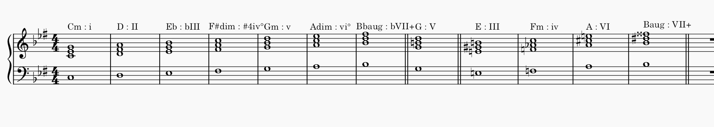

Negative major scale theory
Taking a major scale tonality (types of chords you can build in a major scale) and changing every chord function
Major becomes minor and vice versa, diminished becomes augumented
Then starting from the first note we build chords, to maintain a 7 note scale we need to change notes so that they have the same accidental as the notes in chords before it

Here are some functional chords we can use in this scale:
Other than the naturally occuring 7 chords we can also make the V chord major for a more stable resolution, or use one of the chords we had to alter previously
Theory still in works...
wróć do tekstów